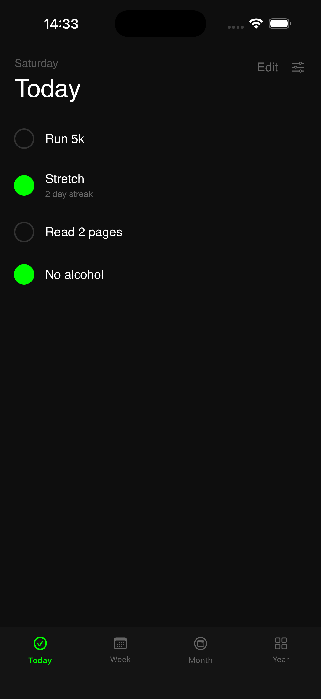
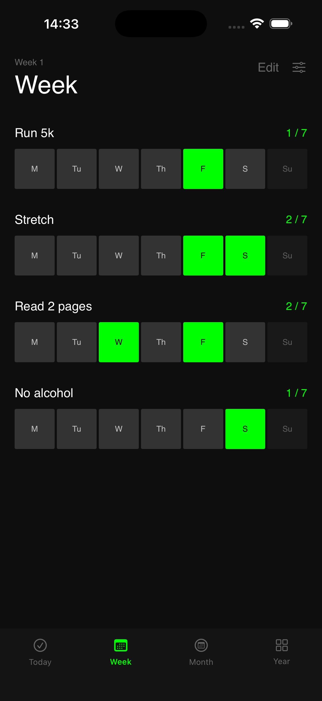
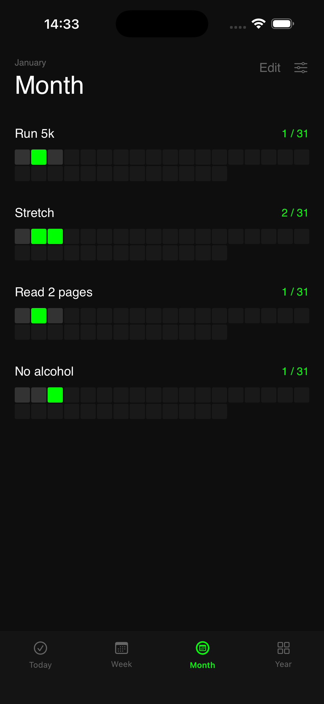
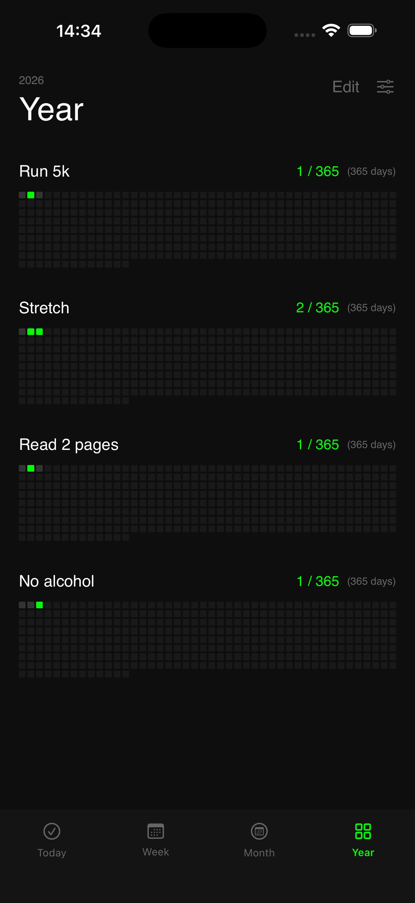

DoneDaily
A calm, focused habit tracker for doing the things that matter — daily.

Built by an indie developer. No ads. No accounts. No tracking.




One tap per habit
No timers. No noise. Just show up and log it.
See patterns clearly
Week, month, and year views that stay readable over time.
Designed to disappear
Built to support habits — not become one.